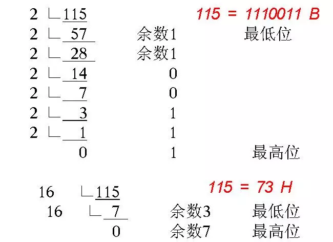

JavaScript中的按位操作符
JavaScript提供了几种运算符，可以对一些简单的值进行基本操作，比如算术运算符、赋值运算符、逻辑运算符、按位操作符等。其他的操作运算符都是经常用到的，比如算数运算符的+、-、*、/；赋值运算符的=、+=、-=；逻辑运算符的||、&&、!等等。但是按位操作符操作符是比较来说不常用的，很多人也不知道都有什么按位操作符?
本章内容大致分为：
- 有哪些
按位操作符?简单的应用 - 在日常开发是
按位操作符可以做哪些事情？
会一步一步从了解按位操作符到能把它运用到项目中来，以使自己的编码更简洁、更方便。
简单了解按位操作符
首先来了解一下按位操作符的定义是什么： 按位操作符（Bitwise operators） 将其操作数（operands）当作32位的比特序列（由0和1组成），而不是十进制、十六进制或八进制数值。其实mdn 中 按位操作符讲的有点晦涩，不太好理解通过对下面的介绍可能会好理解一点。
JavaScript内部Number是以64位浮点数的形式储存，但是做位运算的时候，是以32位带符号的整数进行运算的，并且返回值也是一个32位带符号的整数。
JavaScript中有七中按位操作符，如下表格所示：
| 运算符 | 用法 | 描述 |
|---|---|---|
| 按位与（ AND） | a & b | 对于每一个比特位，只有两个操作数相应的比特位都是1时，结果才为1，否则为0。 |
| 按位或（OR） | a 丨 b | 对于每一个比特位，当两个操作数相应的比特位至少有一个1时，结果为1，否则为0。 |
| 按位异或（XOR） | a ^ b | 对于每一个比特位，当两个操作数相应的比特位有且只有一个1时，结果为1，否则为0。 |
| 按位非（NOT） | ~ a | 反转操作数的比特位，即0变成1，1变成0。 |
| 左移（Left shift） | a << b | 将 a 的二进制形式向左移 b (< 32) 比特位，右边用0填充。 |
| 有符号右移 | a >> b | 将 a 的二进制表示向右移 b (< 32) 位，丢弃被移出的位。 |
| 无符号右移 | a >>> b | 将 a 的二进制表示向右移 b (< 32) 位，丢弃被移出的位，并使用 0 在左侧填充。 |
简单了解二进制
已经知道计算机中，所有数据最终都是使用二进制数表达。10进制转换为2进制or16进制如下图所示：

原码: 一个整数，按照绝对值大小转换成的二进制数，称为原码。
其实就是一个数值的二进制比特位码，比如说5转换成二制是101, Number/Int类型的数占用4字节(32位)，它们为会默认填充0,所以5的二进制位00000000 00000000 00000000 00000101。
反码: 将二进制数按位取反，所得的新二进制数称为原二进制数的反码。
取反操作指：原为1取反为0；原为0取反为1.
比如：将00000000 00000000 00000000 00000101每一位取反，得11111111 11111111 11111111 11111010。
称：11111111 11111111 11111111 11111010是 00000000 00000000 00000000 00000101 的反码。
反码是相互的，所以也可称：11111111 11111111 11111111 11111010 和00000000 00000000 00000000 00000101 互为反码。
补码：反码加1称为补码。
也就是说，要得到一个数的补码，先得到反码，然后将反码加上1，所得数称为补码。
比如：00000000 00000000 00000000 00000101的反码是：11111111 11111111 11111111 11111010。
那么，补码为：11111111 11111111 11111111 11111010 + 1 = 11111111 11111111 11111111 11111011
所以，-5 在计算机中表达为：11111111 11111111 11111111 11111011。
转换为十六进制：0xFFFFFFFB。
负值在二进制中： 二进制为了区分正数和负数，在最高位拿出来当作符号位，0表示正数，1表示负数。
比如我们就拿-1来做一下分析：
1的原码为：00000000 00000000 00000000 000000011的反码为：11111111 11111111 11111111 111111101的补码为：11111111 11111111 11111111 11111110 + 1 = 11111111 11111111 11111111 11111111，也就是-1的二进制
JavaScript中七中操作符
按位与（ AND）&
&以特定的方式组合操作二进制数中对应的位，如果对应的位都为1，那么结果就是1， 如果任意一个位是0 则结果就是0。请看下面示例：
1 | // 1的二进制表示为: 00000000 00000000 00000000 00000001 |
1&2对比过程: 因为1和2它们的比特位没有相同的位置都为1，所以会返回一个00000000 00000000 00000000 00000000的32位二进制，转换位10进制就是0
1&3对比过程: 因为1和3它们的最低位比特位都为1，所以会返回一个00000000 00000000 00000000 00000001的32位二进制，转换位10进制就是1
按位或(OR)|
| 运算符跟 & 的区别在于如果对应的位中任一个比特位为1 那么结果就是1。请看下面示例：
1 | // 1的二进制表示为: 00000000 00000000 00000000 00000001 |
1|2对比过程: 因为1和2它们的比特位为1的并集就是00000000 00000000 00000000 00000011的32位二进制，转换位10进制就是3
1|3对比过程: 因为1和3它们的比特位为1的并集就是00000000 00000000 00000000 00000011的32位二进制，转换位10进制就是3
按位异或(XOR)^
^如果对应两个操作位有且仅有一个1时结果为1，其他都是0。请看下面示例：
1 | // 1的二进制表示为: 00000000 00000000 00000000 00000001 |
1^2对比过程: 因为1和2它们的比特位中只有其中一个为1的组合出来是00000000 00000000 00000000 00000011的32位二进制，转换位10进制就是3
1^3对比过程: 因为1和3它们的比特位中只有其中一个为1的组合出来00000000 00000000 00000000 00000010的32位二进制，转换位10进制就是2
按位非(NOT)~
~运算符是对位求反，1变0, 0变1，也就是求二进制的反码。请看下面示例：
1 | // 1的二进制表示为: 00000000 00000000 00000000 00000001 |
1的二进制反码表示为11111111 11111111 11111111 11111110.- 因为
1的反码`最高位为1表示它是负数，负数又是以补码形式存储的，所以我们要反推一下补码` - 那么
1的反码 - 1为11111111 11111111 11111111 11111101，我们要再把得到的反码 - 1再取反码为00000000 00000000 00000000 00000010,同时要加上一个负号-，最后转换为10进制就是-2
如果不理解反码、原码、补码可以看本篇文章上面的章节。
左移（Left shift）<<
<<运算符使指定值的二进制数所有位都左移指定次数，其移动规则：丢弃高位，低位补0即按二进制形式把所有的数字向左移动对应的位数，高位移出(舍弃)，低位的空位补零。请看下面示例：
1 | // 1的二进制表示为: 00000000 00000000 00000000 00000001 |
有符号右移 >>
>>该操作符会将指定操作数的二进制位向右移动指定的位数。向右被移出的位被丢弃，拷贝最左侧的位以填充左侧。由于新的最左侧的位总是和以前相同，符号位没有被改变。所以被称作“符号传播”。请看下面示例：
1 | // 1的二进制表示为: 00000000 00000000 00000000 00000001 |
无符号右移>>>
>>>该操作符会将第一个操作数向右移动指定的位数。向右被移出的位被丢弃，左侧用0填充。因为符号位变成了 0，所以结果总是非负的。（译注：即便右移 0 个比特，结果也是非负的。）
对于非负数，有符号右移和无符号右移总是返回相同的结果。例如， 9 >>> 2得到 2 和 9 >> 2 相同。
位操作符使用技巧
判断奇偶
通过按位与（ AND） &来判断奇偶性 代码如下：
1 | function isOdd (int) { |
我们就拿1 & 1和1 & 2来分析它是什么执行对比的：
1 | // 1的二进制表示为: 00000000 00000000 00000000 00000001 |
(1 & 1): 1的二进制简写为01，3的二进制简写为11，因为它们的最低位都为1，所以按位与（ AND） &的结果就是00000000 00000000 00000000 00000001，最后转换为10进制1.(1 & 2): 1的二进制简写为01，2的二进制简写为10，它们没有相同比特位为1，所以按位与（ AND） &的结果就是00000000 00000000 00000000 00000000，最后转换为10进制0.
取整
>>，<<，|，~~取整：它们无论是正数还是负数都不会受到影响，同时它们都是向下取整。>>>取整：>>>它只能对正数向下取整。
>>，<<，|，~~
1 | Math.floor(4.5) // 4 |
>>，<<，|无论是正负数都会向下取整。
>>>，~~
>>>: 它只能对正数做向下取整，不能用于对负数取整。
1 | // 利用 >> |
交换值
1 | // 1的二进制表示为: 00000000 00000000 00000000 00000001 |
我们简单分析一下执行过程：a = a ^ b: 现在a = 1; b = 2我们知道1和2的二进制，通过^(相同的比特位只有一个为1，就会返回1，否则返回0)计算得出00000000 00000000 00000000 00000011，转换为10进制的话就是3，所以现在a = 3。b = a ^ b: 现在a = 3; b = 2我们知道2和3的二进制，通过^(相同的比特位只有一个为1，就会返回1，否则返回0)计算得出00000000 00000000 00000000 00000001，转换为10进制的话就是1，所以现在b = 1。a = a ^ b: 现在a = 3; b = 1我们知道1和3的二进制，通过^(相同的比特位只有一个为1，就会返回1，否则返回0)计算得出00000000 00000000 00000000 00000010，转换为10进制的话就是2，所以现在a = 2。
最后就是a = 2; b = 1
HEX <=> RGB 互转
颜色转换：RGB转为十六进制
左移位（<）运算符的一个非常有用的应用程序是将颜色从RGB表示转换为十六进制表示。RGB颜色的每个组件的颜色值在0-255之间。简单地说，每个颜色值可以用8位完美地表示。
1 | 0 => 0b00000000 (2进制) => 0x00 (16进制) |
因此，颜色本身可以完美地用24位来表示（红色、绿色和蓝色分量各8位）。从右边开始的前8位表示蓝色分量，接下来的8位表示绿色分量，之后的8位表示红色分量。
1 | (binary) => 11111111 00100011 00010100 |
既然我们已经了解了如何将颜色表示为24位序列，那么让我们来看看如何从颜色的各个组件的值组成颜色的24位。假设我们有一个用RGB（255、35、20）表示的颜色。以下是我们如何组合这些位：
1 | (red) => 255 => 00000000 00000000 00000000 11111111 |
下面我们封装一个函数来实现上面的伪代码：
1 | // 函数实现 |
颜色转换：十六进制转为RGB
简单来说就是通过右移（>>）运算符逆推还原原来的颜色值，下面用伪代码大致整理一下思路。有符号右移（>>）运算符的一个非常好的应用是从颜色中提取RGB颜色值。当颜色以RGB表示时，很容易区分红色、绿色和蓝色颜色分量值。但是，对于以十六进制表示的颜色，这将花费更多的精力。
假设我们有一个用十六进制表示法#ff2314表示的颜色。下面是颜色的储存为二进制的编码：
1 | (color) => ff2314 (hexadecimal) => 11111111 00100011 00010100 (binary) |
为了获得单个部分，我们将根据需要将颜色位按8的倍数右移，直到从右边得到目标组件位作为前8位。由于颜色的32位中的符号标志位是0，因此我们可以安全地使用符号传播右移位（>>）运算符。
1 | color => 00000000 11111111 00100011 00010100 |
现在我们将目标颜色位作为右前8位，我们需要一种方法来屏蔽除前8位之外的所有其他位。这使我们回到和（&）运算符。请记住，&运算符可用于确保关闭某些位。
让我们从创建所需的位掩码开始。就像这样：
1 | mask => 00000000 00000000 00000000 11111111 |
准备好位掩码后，我们可以对上一次右移操作的每个结果执行与（&）操作，使用位掩码提取目标颜色。
1 | color => 00000000 11111111 00100011 00010100 |
基于上面的伪代码，下面下面实现一个简单的函数，它会把传入的hex 16进制颜色值转换为rgb颜色值组。
1 | // hex 16进制转换 =》 rgb 函数 |
总结
因为一道面试题引申出来的JavaScript中的按位操作符，才有了这篇文章记录JavaScript中的按位操作符和它们具体用来做什么。当然这个只是最简单的使用，在通信、加密中它们得到更多的应用。